This log documents the development of my website, from early ideas and
layout planning to interface experiments, coding decisions, and final
refinements.
Stage 1 — Initial Concept
Date: 10 March 2026
I began by brainstorming possible visual styles using Crazy 8s. It
worked well as it allowed me to quickly sketch down any ideas without
hesitation or second thoughts.
Crazy 8s 1–4
Crazy 8s 5–8
Plate / Meal → users "consume" content like a curated dish
Folder Stack → interaction as filing and retrieval
Desk / Setup → a workspace
Brain, Plants, System UI, Scrapbook, Fruit bowl
Stage 2 — Layout & Structure
Date: 14 March 2026
I planned the structure of the website and experimented with layout
options. At this stage, I focused on navigation, and did some informal
user testing during class by letting others simulate and make
assumptions about how they would navigate the site.
I didn't manage to flesh out all the bits I wanted to explore, and my
design pivoted from a scrapbook-like feel to a more cyber-inspired look.
I was inspired by the use of getUserMedia() in the interactive media
webpage and wanted to experiment using this function.
Homepage wireframe — medical reception desk aesthetic
Detail page sketch
Experiment — Google Stitch
Date: 14 March 2026
Tried experimenting with Stitch to vibe-code the website — but honestly
not too satisfied with the output. I need to look into prompt
engineering to manipulate it better.
I felt like I was negotiating with the tool instead of having direct
dictation over it. What felt awkward was the unpredictability and lack
of precision — I'm not used to articulating design thoughts through
prompts. It also struggled to capture the specific aesthetic I was
aiming for, often defaulting to cleaner, more generic UI patterns.
That said, what worked really well was how quickly it could generate
structured layouts and visual directions — navigation hierarchies,
modular panels, consistent UI components. Overall, keen to keep
experimenting.
Stitch work in progress
Initial output
Output after 3 iterations
Stage 3 — Development & Testing
Date: 20 March 2026
I started coding the website in HTML, CSS, and JavaScript. I tested
interactive features, adjusted styling, and refined the interface to
better match the intended experience.
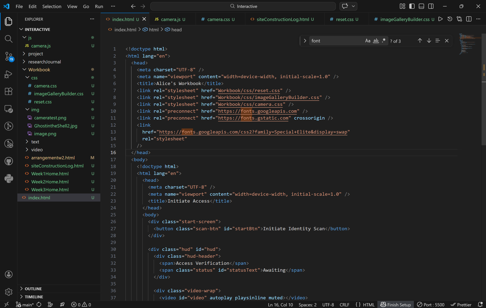
Coding progress
Adding alert dialog & main content entry
Early test version
Adding custom cursor to subpages
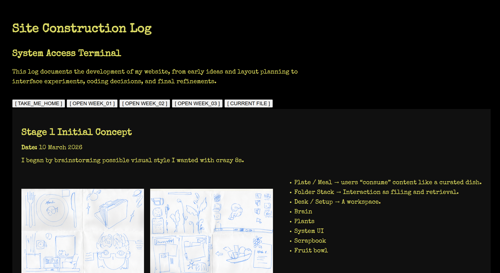
Original site construction page
Web Design Choices
Date: 25 March 2026
// Fonts
For this project, I chose a monospaced, terminal-style font to reinforce
the system/surveillance aesthetic. I'm currently using VT323, Special
Elite, and Lucida Console — sourced from Google Fonts. Lightweight and
easy to integrate.
// Website Narrative
Interface language — "Access Verification", "Initiate Identity Scan"
System feedback loops — camera access, scanning, confirmation
Subtle environmental cues — glitches, overlays, eye movement
The point is that the user is being constantly monitored, and the
website responds subtly to every interaction in an uncanny way. I was
interested in capturing the subtle discomfort of being observed,
processed, and not fully in control of the environment.
// Inspiration
Conceptually, I was intrigued by clinical or institutional interfaces
that feel functional but cold. There's also inspiration from glitch
aesthetics and unstable systems.
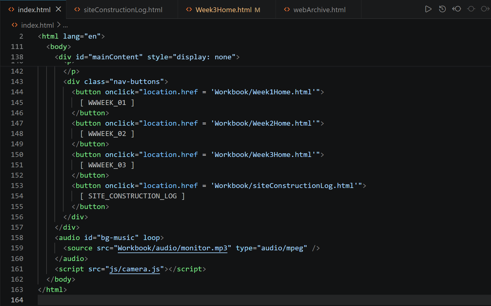
Adding background audio
FURTHER REFINEMENT
Date: 15 April 2026
I experimented with cursor effects, glitch overlays, and additional UI
elements to enhance the immersive experience.
I want to step up the
sense of surveillance through a rotating eyeball and a dynamically
rendered welcome message that fetches the user's name and remembers it.
In upcoming iterations, I hope to refine the visual design further by
incorporating p5.js
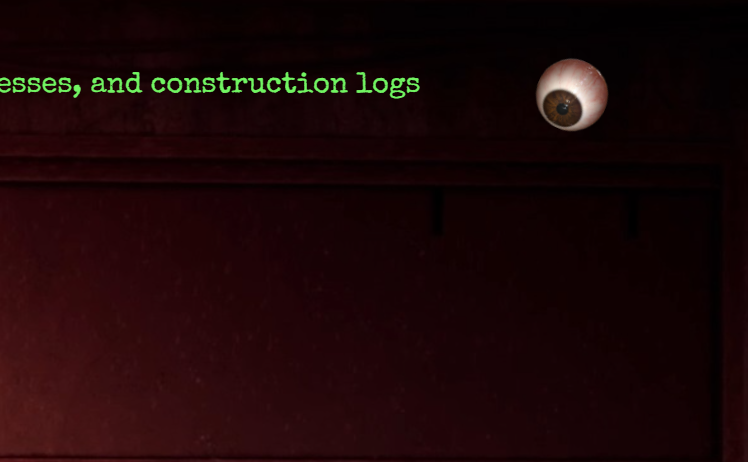
Cursor-tracking eyeball with randomised movement
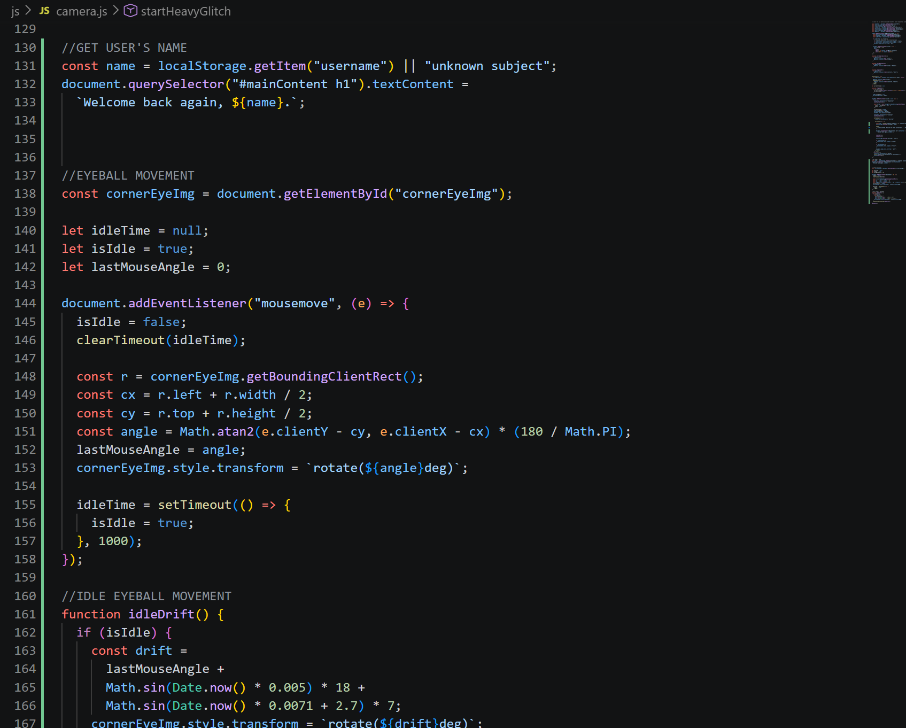
Coding WIP - eyeball movement and dynamic name fetching
FILE ORGANISATION
Date: 22 April 2026
I made some updates to the filetree structure, ensuring scalability as
the weeks progress. I preferred having all of my research entries in one
centralised webpage, and other in-class and out-of-class experiments all
in another place.
I also added home links for easier navigation, based on feedback from
Workbook A.
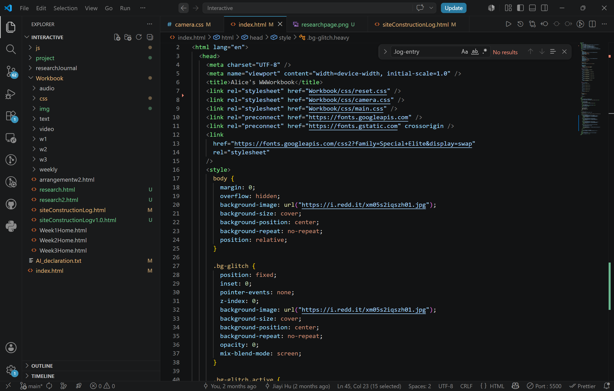
File structure
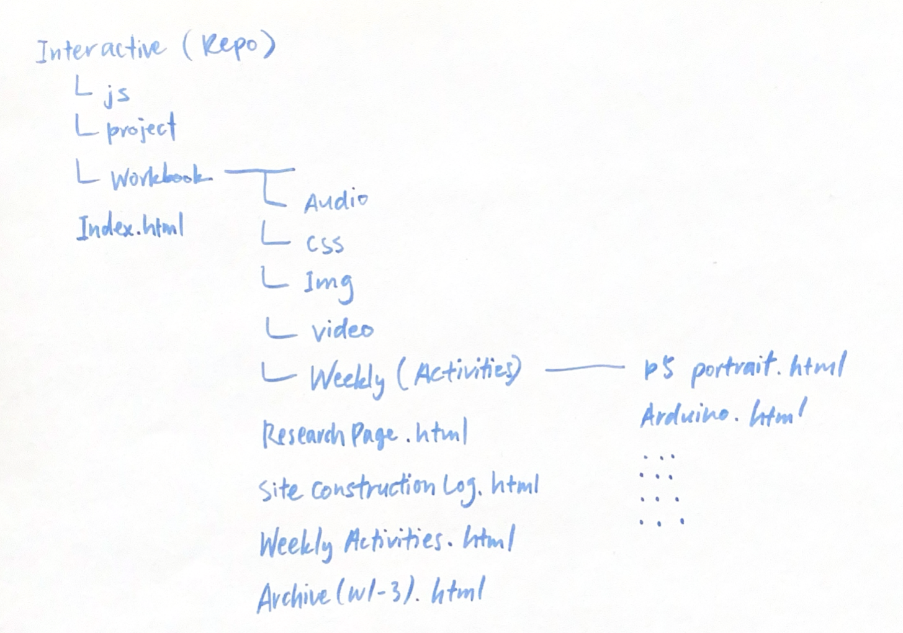
File structure - sketch architecture
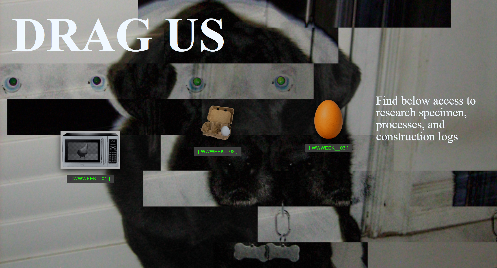
New 'homepage' for archived items
REFRESHED RESEARCH JOURNAL
Date: 4 May 2026
I refreshed the research journal page to better align with the website's
aesthetic and narrative. I wanted to create a more cohesive experience
across the site, and felt that the original research journal page was a
bit too plain and disconnected from the overall vibe. I added more
surveillance-inspired design elements, like the green-on-black color
scheme, monospaced fonts, and glitch effects.
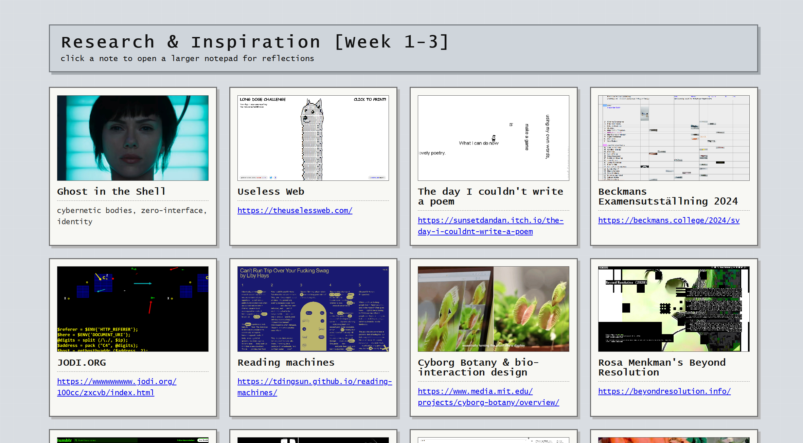
Previous research journal page
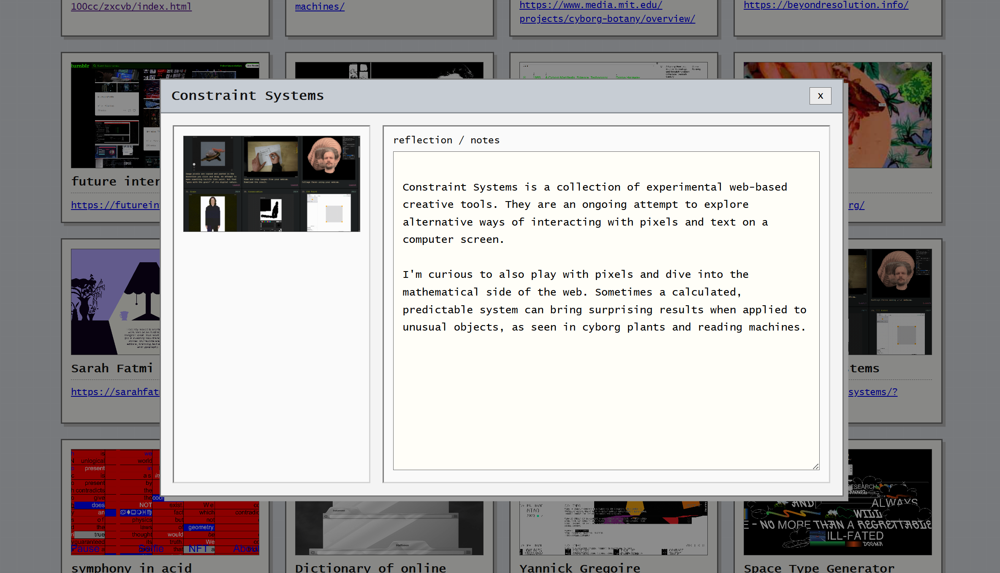
Previous research journal page - Detailed Entry
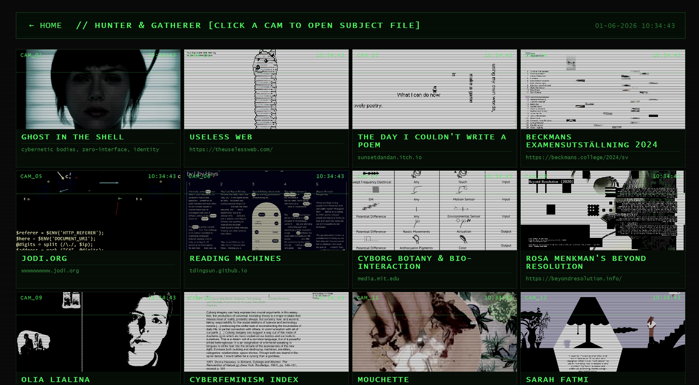
Updated research journal page
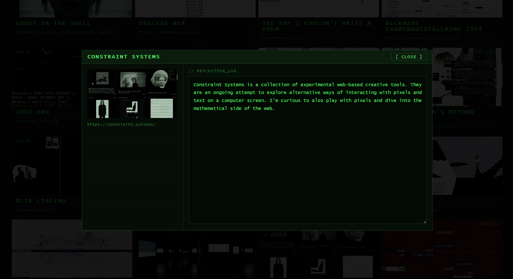
Updated research journal page - Detailed Entry
ENHANCED HOMEPAGE
Date: 19 May 2026
I refreshed the research journal page to better align with the website's
aesthetic and narrative. I wanted to create a more cohesive experience
across the site, and felt that the original research journal page was a
bit too plain and disconnected from the overall vibe. I added more
surveillance-inspired design elements, like the green-on-black color
scheme, monospaced fonts, and glitch effects.